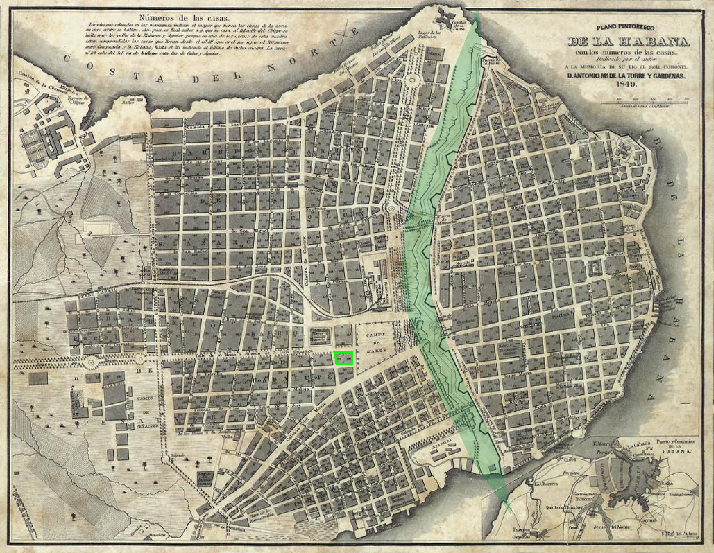
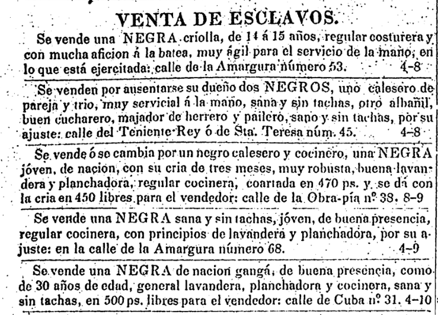
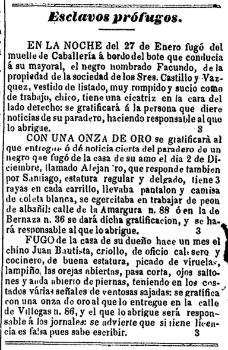
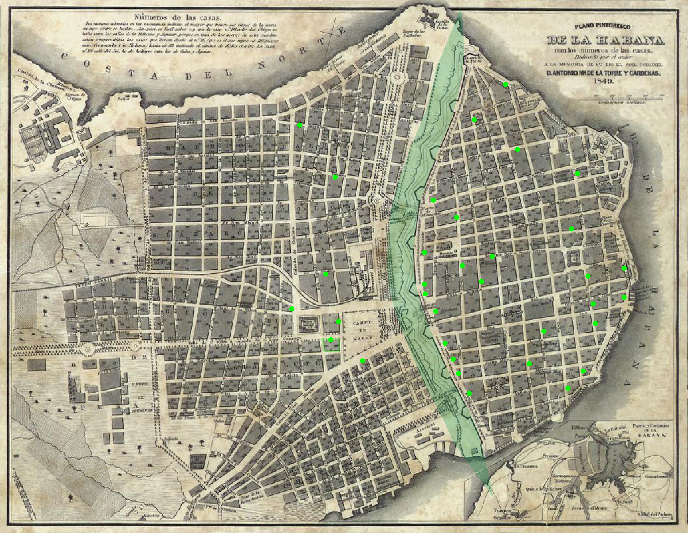
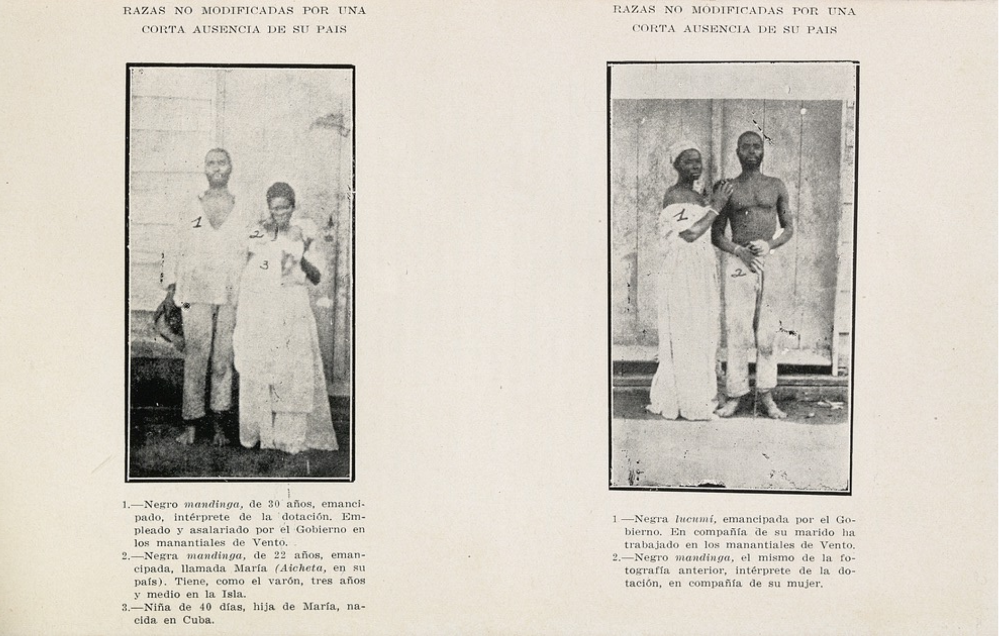
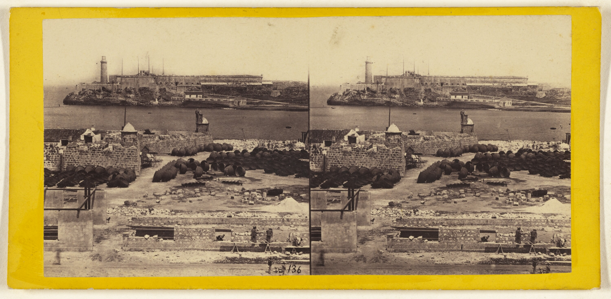
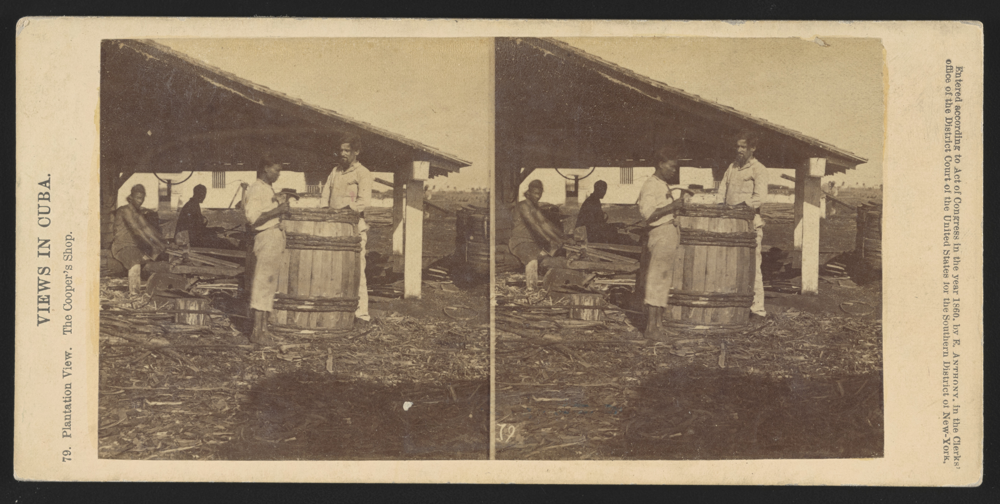

Building Resistance:
Slavery, Artisans, and the Production of the Built Environment in Nineteenth-Century Havana
Blas Lucumí
October 9, 1841, Blas Lucumí was working to build one of Havana’s largest private homes, a two-story, neoclassical structure with an Ionic portico spanning an entire city block. The building was for Blas’s master, likely the richest man in Cuba, don Domingo de Aldama. Days earlier, Blas had learned that he was being sent to work constructing the new railroad Aldama was financing but feared he was being sent to the countryside, to one of his master’s sugar plantations. He had been talking to the other men, Yoruba speakers like him, about what he suspected was in store for them. That morning Blas convinced these men to stage a strike, refusing to leave the construction site and demanding they be paid for their work. Later that morning Spanish infantry marched from their practice grounds across the street and when the enslaved Lucumí workers stood their ground, the soldiers, armed with rifles and bayonets, attacked. They killed Blas and five others, seriously injuring six more.
Blas was forced to work in Havana in the 1840s, a city nearing the apex of the Second Slavery, a period in which the mechanization of sugar production turned Cuba into a top world producer of the commodity bringing unthinkable wealth to men like Aldama. While slavery had been an important part of the island’s economy since the island was conquered and colonized in the early sixteenth century, the global demand for sugar fed another industry: the illegal transatlantic slave trade. Though Spain had formally agreed to end the trade in 1815 for the next five years the number of ships carrying human cargo reached all-time highs from 85 recorded voyages from Cuba to Africa between 1809 to 1814 to 301 voyages between 1815 and 1820. For decades, as warfare plagued the collapsing Oyo empire in the Bight of Benin, the Spanish would use every means possible to transport the human captives from this conflict in West Africa to Cuba. Despite treaties outlawing the slave trade, they sailed ships under false flags and steamships well into the second half of the nineteenth century. This was also a period in which the growing ranks of enslaved Africans staged numerous revolts on rural plantations. Concurrently, the population of free people of color grew in the cities. The Spanish sought to remedy their perceived vulnerability to revolution through political means, including promoting white migration from Spain and attempting to take control of the built environment through regulation of construction and the labor force.

View of Havana's harbor in 1850.
Within this context, the violent incident is remarkable for several reasons. First of all, the incident was unusual for its location—literally—behind this stately stone façade. As most revolts and uprisings occurred outside the cities, on sugar plantations, that a rebellion would occur on an urban construction site was unusual. Although other uprisings did occur on suburban sites associated with building production, like a nearby sawmill. Second, the Aldamas were one of the wealthiest families of Spanish merchants in the middle of the nineteenth century and the house was two residences: one for Domingo de Aldama and the other for his son-in-law, Domingo del Monte, who was a supporter of Cuban independence and a popular literary circle where the most famous Afro-Cuban writer, Plácido, held court. That their residence was not only built by slave labor, but the site of one of the few documented urban construction labor strikes is highly symbolic. Finally, the confrontation highlights the immoral and contradictory nature of Aldama himself. Despite investing in the latest technologies, the wealthy businessman was known to have traded twenty slaves for an equal number of shares in the railroad company. Thus, in meting out violence against Blas Lucumí and his supporters, Aldama was taking a calculated loss, exemplifying the cruel rationality at the core of the slave system.

View of one of Havana's portals through the city walls in 1860.
The Palacio de Aldama is often cited as the example of an opulent, academic design constructed outside the walls of Old Havana. Its location and its orderly façade are strongly associated with trends in urbanization, the regulation of urban architecture, and the professionalization of design and the construction trades. Yet, if we follow Linda Clarke’s work on eighteenth- and nineteenth-century London, we can see that the building was not only significant for what it represented as a finished product but also for the way it was produced. In Cuba, the social labor process involved the complex interaction of racialized slavery, skilled work by emancipated people of color, and the changing proportion and power of white artisans and merchants of varying social classes. While symbolizing the power of the Spanish who had been recently enriched through sugar and slaves and their challenges to Spanish colonial authority as a rising bourgeoisie, the mansion as an icon and finished work of architecture does not tell the whole story. Clarke argues that “the relations between built products hides the relations between activities involved in their production. In a city perennially short on skilled labor, production of the palace was only possible due to the large number of skilled and enslaved individuals residing in Havana. Through their interaction with people of other classes and races involved in architecture and construction, we can analyze production.
Location of the Palacio de Aldama in 1849, to left (west) of the large open area just outside the colonial city walls. Image by author.
Division of labor
We don’t know everyone present at the Aldama construction site. Yet, if we were to sketch the division of labor on the construction site for the Palacio de Aldama, we would have Domingo de Aldama himself acting as the owner/contractor, Manuel José Carrerá y Heredia, a Dominican-born engineer acting as the architects, Aldama’s relative Evariso del Monte acting as an overseer and administrator. Working on the site that day there were at least 52 enslaved Africans, who needed stone to do their jobs, suggesting that at least some of them were masons. In Aldama’s account books for the period, he has entries for salaries for workers on the site, suggesting that some (not the Lucumí men) were receiving wages. These may have been carpenters, blacksmiths, or other tradesmen. The confrontation between the owner/contractor, his overseer, and the enslaved African masons is just one example of the frequent conflicts and tensions that were undoubtedly part of an evolving process of production of the built environment at this time. Yet, the presence of free people of color on or near the site may in part explain the willingness of Blas and his supporters to rebel.
Nevertheless, the fact is that many of the artisans and laborers responsible for the construction and maintenance of the built environment were enslaved. Numerous advertisements in the local newspapers of Havana announced the sale of men of African descent (Cuban-born and African-born), who practiced as an albañil, the Spanish word for mason, bricklayer, or builder. Occasionally men with carpentry skills are mentioned and there are frequently people working as day laborers for sale.
Caption.
In addition, the same papers ran advertisements for prófugos or fugitive slaves. Many describe the valuable skills held by runaways, like those of builders, carpenters, carriage drivers, and stevedores.
Caption.
Therefore, as demonstrated in a mapping of these individuals whose names appeared in both types of advertisements (for-sale and fugitive), skilled and enslaved individuals lived and worked throughout Havana in the old part of the city and outside the walls during the period bookending the rebellion at the Palacio de Aldama construction site, approximately between 1820 and 1860. Interestingly, the vast majority of these advertisements appear in the years around 1840. Despite the historic dichotomy of intramural and extramural Havana, the vast majority of enslaved artisans were recorded inside the walls or just outside them.
Approximate locations listed for enslaved Africans working in the building trades between 1820 and 1850. Image by author.
In a short essay titled, “The Arts Are in the Hands of the People of Color,” liberal reformer José Antonio Saco bemoans the deplorable state of artistic and mechanical capacity among the island’s white population, attributing the low level of skill among the privileged castes to their cultural aversion to manual labor and avarice. To advance in the world, Saco believed, Cuba needed to educate its white youth in drawing, painting, geometry, and other useful arts to support industrialization. Indeed, during the nineteenth century, as the sugar industry mechanized and expanded, the construction industry did too as capital produced by selling the lucrative, global commodity, was invested in real estate and buildings. In this process of transforming what was essentially capital produced through agriculture and commerce into urban assets, the production of architecture was necessary. Just who was involved in this process, whether and how much they would be paid, and what it would look like was an ongoing struggle.

The Grecian Chapel built on the spot where Columbus first said Mass. [Cuba]; George N. Barnard (American, 1819 - 1902), Edward and Henry T. Anthony & Co. (American, founded 1862, merged 1902), Kuhns; about 1859–1861; Albumen silver print; 84.XC.702.232; No Copyright - United States (http://rightsstatements.org/vocab/NoC-US/1.0/)
On the one hand, some have argued that neoclassicism was the aesthetic manifestation of Saco’s anxiety and austere facades organized by retrained classical orders rendered in a palette of light stone and stucco became increasingly common in the 1800s. It was precisely during the period in which the population of people of color threatened to overtake the white population that formal art training was instituted on the island. Un until the early nineteenth century, the majority of practicing architects were military engineers. Most buildings were relatively simple and the master builders that did practice on the island were typically self-taught. The beginning of the academic transformation in the arts is exemplified by the building known as “El Templete” or the Little Temple, a Greek Revival temple built in 1827 to commemorate the first Catholic mass held by Christopher Columbus in 1519. Filled with classically-inspired murals, the temple is representative of the Bourbon Crown authority’s use of neoclassicism to assert their superiority and wrest control of the arts and trades, which had long been the purview of self-educated, Black artisans. Neoclassicism provided the aesthetic regime for the expansion of the city and the standardization of its production at all scales. Façade projections and floor heights were regulated by decree and the signature of a licensed architect, engineer, or master builder was required on plans filed in the town hall—even though a sufficient number of these professionals was entirely lacking.

Instantaneous View, from the Calle de Obispo looking towards the Plaza.; George N. Barnard (American, 1819 - 1902), Edward and Henry T. Anthony & Co. (American, founded 1862, merged 1902), Kuhns; about 1859–1861; Albumen silver print; 84.XC.702.233; No Copyright - United States (http://rightsstatements.org/vocab/NoC-US/1.0/)

View of a road leaving the city of Havana. Notice the repeating Doric columns along self-similar facades even for more humble residences. Circa 1860.
Buildings, boulevards, and other crucial urban infrastructures had long been “in the hands” of not just free people of color, but the large number of African slaves who were routinely employed constructing some of the most essential urban structures to make Havana possible. While the process of professionalization and the conflict between licensed and self-trained master builders, was one level of the process, intermediaries who could communicate and manage teams of enslaved workers were surely necessary for larger jobs like the Palacio de Aldama. Historically, teams of enslaved Africans owned by the Crown, “the king’s slaves” were the preferred labor force for the eighteenth-century fortifications that protected Havana during a time of intense naval and military jousting between the British, French, and Spanish forces who were routinely at odds to control the strategic and lucrative Caribbean islands. Similarly, as Cuba began to mechanize and industrialize—especially connected to sugar production—the expansion of railroads was made possible by the labor of enslaved Africans. Similarly, there are numerous accounts of enslaved Africans laboring on other grueling tasks that were fundamental to the expansion of communications and transportation infrastructure, such as the large Vento Canal.
Photographs of an "emancipated" family in the 1860s (left) and an enslaved couple known to have worked in the Vento Canal in Cuba. From Henri Dumont, "Antropoloía y patología de los negros esclavos," Revista bimestre cubana, 25, 1915.
When Blas refused to leave Aldama’s construction site, he was resisting being moved from an urban site to a rural one. The incident is a reminder that construction work of urban buildings, transportation infrastructure, and rural agricultural work could be performed by the same enslaved workers. Indeed, not only was the division of labor evolving at the level of managers and master builders drawn from competing backgrounds, but the workers themselves might be enslaved, incarcerated, or wage laborers. Indeed, these categories were not necessarily mutually exclusive either.
Emancipation, which was often used as a tool to incentivize the enslaved to work harder during their most productive years of life, was also granted as an occasional reward for extraordinary service to a master or the Crown. The extent of enslaved Africans’ involvement in infrastructure projects needs further research, but its scale is suggested by the 2,033 who were emancipated for their work on the canal between 1856 and ’58. Though, this was not granted by decree until 1865 and finally announced to the public in 1870 in an official effort to provide credentials to those freed for their work completed over a decade earlier. Indeed, the racialized use of incarcerated people was not unique to Cuba and played an important role in “modern” systems of infrastructure from US roads to the creation of the US Panama Canal Zone.
An Instantaneous view. The Harbor of Havana, with Castle of the Point in the foreground; the Moro [sic] Castle in the background.; George N. Barnard (American, 1819 - 1902), Edward and Henry T. Anthony & Co. (American, founded 1862, merged 1902), Kuhns; about 1862; Albumen silver print; 84.XC.873.394; No Copyright - United States (http://rightsstatements.org/vocab/NoC-US/1.0/).
The Crown and local Spanish elites had gone to great lengths to enforce measures that would sew divisions between free people of color and enslaved Africans, both worked in the building trades and were responsible for the processes of production that made the built environment of the city possible. Many prominent leaders of rebellions were free people of color who worked as artisans, inspired by the Haitian Revolution’s victory in 1804. For example, the 1812 Aponte Rebellion, was led by a self-educated carpenter and sculptor, José Antonio Aponte, a Black man living just outside the city walls in Havana.A century later, in 1912, the movement of the Independentistas de Color was led by Evaristo Estenoz, another Black carpenter. He organized a political and military uprising to improve the political representation of people of color in Cuba, who had been promised (and denied) greater representation and economic possibilities in post-Independence for their alliance with white elites fighting for independence from Spain. The two skilled builders, Aponte and Estenoz were both executed for their revolutionary activity. The symbolism of these hundred years bookended by two literate Black artisans is meant as a reminder of the perennial inspiration (and threat) of the self-educated artisan. In the case of Cuba, this threat was undoubtedly racialized and it was embodied by a group of people dispersed throughout the very colonial city they were building and plotting to overtake. Thus, as C.L.R. James famously wrote of the French colony of Saint Domingue, the growth of slavery contained the seeds of its demise. In the construction of colonial architecture in mid-nineteenth-century Cuba, those who constructed the buildings themselves were often the same people who led uprisings challenging the slave system.

Interior of a Sugar house. Negroes making sugar - an interesting operation. [Cuba]; George N. Barnard (American, 1819 - 1902), Edward and Henry T. Anthony & Co. (American, founded 1862, merged 1902), Kuhns; about 1862; Albumen silver print; 84.XC.979.1455; No Copyright - United States (http://rightsstatements.org/vocab/NoC-US/1.0/).
Freedom and its contradictions
If enslaved individuals possessing sought-after skills were widespread throughout the city of Havana around the middle of the nineteenth century. Many scholars have pointed to the fact that urban slaves were surrounded by examples of free and propertied people of color, for whom they may have worked, collaborated, imagined emulating or even been owned. Indeed, the October 1841 incident on Aldama’s construction site exemplifies the multivalent divisions along with status, skill, and nationality that would be needed to fully comprehend the division of labor on a mid-nineteenth-century construction site in Cuba.
Blas Lucumí and the other striking masons had two demands when they refused to work: that they be able to remain in the city (and not be sent to the countryside), and that they be allowed to hire themselves out for a wage. That slave labor in Cuban cities was different from that of the countryside has been repeatedly emphasized by numerous prominent contemporaries from the Prussian naturalist and travel writer Alexander von Humboldt to the most famous chronicler of nineteenth-century Cuban society, Cirilio Villaverde. In his 1826 account of his time on the island, Humboldt writes:
Slavery is possibly the greatest evil ever to have afflicted humanity, no matter if one focuses on the individual slave ripped from his family in the country of his birth and thrown into the hold of a ship or considers him as part of the herd of black men penned up in the Antilles. Still, there are degrees of suffering and deprivation. What a difference there is between a slave who works in a rich man’s house in Havana or Kingston, or who works for himself and gives his master only a daily amount, and a slave who labors in a sugar factory!
Similarly, Villaverde expresses a widely held (if equally reductive) view of the degrees of relative brutality when he describes the almost Eden-like natural world of the coffee plantation compared to the brooding scene at a sugar mill in his novel Cecilia Valdés.
While the difference between urban life as an enslaved artisan and life in the barracoons and cane fields was surely not the same, what remains true, as exemplified by Blas Lucumí’s resistance, was that anyone who was enslaved could easily be moved between the two conditions. This movement was contingent upon larger networks of material supply, labor, and production. Indeed, the deposition also mentions that the men were being sent to work on the railroad because they had run out of stone, which would have likely been quarried locally. Quarry work was another occupation that appears in the advertisements selling enslaved Africans at this time. Quarries were located in the south of Cuba, where companies operated workshops preparing stone for shipment to urban construction sites. Thus, production exists beyond the site of a single building or of an expanding city to include areas where building materials are produced and their transportation. The flows within these local and international networks—imported materials were used too—had huge implications for the working conditions of those constructing the built environment.

View of a nail factory outside of Havana c. 1860.
Unlike many enslaved Africans, Blas was working in the heart of Havana, blocks from the center of colonial power, but also near a large population of freed people of color. Both were crucial for the transformation of capital generated through agricultural production and commerce into the built environment and urbanization. The production of the palace and the process of urbanization of which it was a part was made possible by individuals who worked in multiple contexts, moving in and out of multiple occupational roles.
Plantation view. The cooper's shop. George N. Barnard. c. 1860. The United States Library of Congress.
It was through the interactions of enslaved Africans and free people of color on construction sites, in urban neighborhoods, but also across a landscape of degrees of necessary (albeit harshly constrained and controlled) Black mobility, that the required materials, commodities, and messages were transported to make large urban buildings like the Palacio de Aldama a reality. Embedded and co-constitutive of this production process in which people of different statuses, enslaved and free, the future growth of rebellions germinated, and capital was transformed into enduring structures that would continue to provide the ground and material structures for society to reproduce itself.